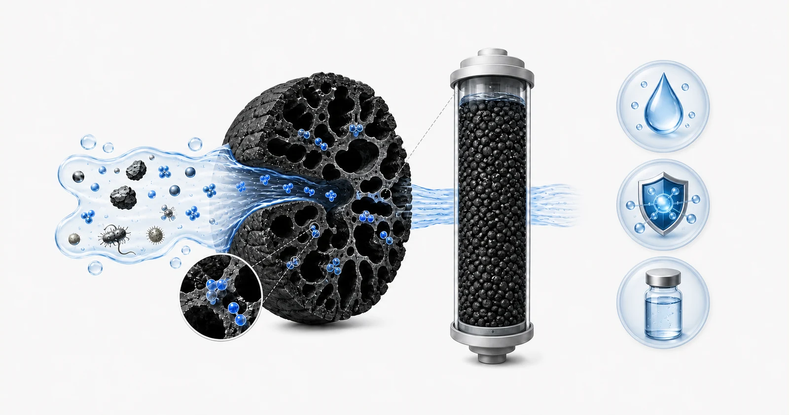
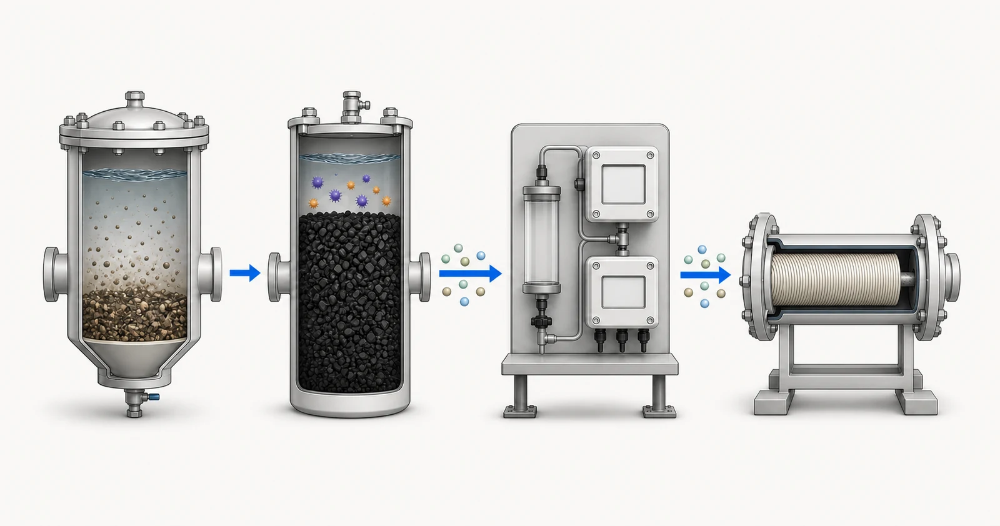

直接の答え
活性炭は吸着媒体であり、万能の浄化剤ではありません。その役割は、指定された処理目標、供給水の組成、競合する有機物、流れ、および媒体の設置および維持方法に対して定義する必要があります。粒状メディア、カーボンブロック、粉末カーボン、インラインカートリッジは、異なる接触条件と動作限界を生み出します。したがって、有用な推奨事項は、水またはプロセス流体のレポートと治療概要から始まります。 Yuchen Water は、その情報を確認し、活性炭材料とカートリッジまたは容器の形式について議論し、関連する機器の質問をサポートできますが、最終的なパフォーマンスは検証済みのメディア証拠と提案された動作条件に関連付けられている必要があります。

- 給水マトリックスと競合物質
- 多孔質活性炭表面
- アクセス可能な細孔内での吸着
- 治療境界とモニタリング
概念図。テスト結果、製品認証、または設計図ではありません。
購入者の問題から始める
購入者は、臭気、塩素、色、有機化合物、または未知の味の問題の除去など、幅広い要求から始めることがよくあります。これらのリクエストは症状を説明するものであり、設計の基礎を説明するものではありません。最初のタスクは、水の供給源、水の変動性、どの化合物または測定可能なエンドポイントが重要であるか、炭素段階が主な処理ステップ、研磨、または膜の前処理として意図されているかどうかを特定することです。都市用水カートリッジと工業用 GAC 容器には両方とも活性炭が含まれている可能性がありますが、証拠とモニタリングのニーズは大きく異なります。
2 番目の質問は、活性炭には何が期待されていないのかということです。沈殿物管理、硬度管理、消毒、イオン交換、膜分離などの機能が必要とされる場合、これらの代替品として提供されるべきではありません。一部の溶解物質は強く吸着されない場合があり、天然有機物との競合により、ターゲット化合物の有用な能力が低下する可能性があります。レビューでは、すべての水質問題を 1 つの媒体床に割り当てるのではなく、完全な処理の流れを考慮する必要があります。
どのようなレポートと運用データが必要か
有用な技術レビューは、水の化学と水力学および商業運転情報を組み合わせたものです。入手可能な場合は現在の結果を送信し、ソースと日付ごとにサンプルにラベルを付けると、季節やプロセスの変動が見えるようになります。
- 水源、サンプリング日、既知の季節変動またはバッチ変動
- ターゲット化合物、入口濃度、既知の場合は必要な出口ターゲット
- pH、温度、濁度、浮遊物質に関する情報
- TOC または COD、色、匂い、および関連する有機性インジケーター
- 酸化剤制御が関係する場合の遊離塩素、全塩素、またはクロラミン
- 平均流量、ピーク流量、毎日の実行時間および動作パターン
- 既存の前処理、利用可能なハウジングまたは容器、および圧力制限
- モニタリング方法、サンプリングポイント、および提案された交換または再生方法
レポートは、提案された情報源を表すのに十分な最新のものである必要があり、サンプルの日付と場所を特定する必要があります。季節、生産バッチ、または運転状態によって水が変化する場合は、1 つの都合の良い結果ではなく範囲を提供してください。現在の分析とは別に、必要な処理水の目標を記載します。値が不明な場合は、その値を不明としてマークします。目に見えるギャップは、推測される数値よりも安全です。
油圧に関する情報は化学とは別のものです。平均流量だけでも、短いピーク状態、断続的な負荷、および長い停滞を隠すことができます。毎日の稼働時間、ピーク需要、利用可能な圧力、許容圧力損失、機器の寸法を確認し、WHO がカーボンを監視して交換します。これらの詳細によって、それがなければ妥当なメディアが保守可能なシステムで使用できるかどうかが決まります。
選択ロジック
選択は、製品の形態から治療目標を分離することから始まります。ターゲット化合物、味と匂いの問題、または酸化剤の残留により、吸着の問題が生じます。流れ、スペース、圧力損失、サービスへのアクセスにより、構成に関する問題が生じます。炭素源、活性化方法、粒子サイズ、後処理により、メディアの仕様が決まります。これら 3 つの質問は相互に作用しますが、GAC、CTO、ココナッツの殻などのラベルからのみ回答できるものはありません。
メディアの仕様は、供給された材料の比較に役立ちますが、単一の指標では現場の能力を確立できません。ヨウ素価、メッシュ範囲、灰分、水分、硬度は、サンプルまたはロットのさまざまな側面を表します。これらは、汚染物質固有のテスト、パイロット作業、または運用基盤の見直しに代わるものではありません。治療目的がデリケートな場合、推奨事項には、どのような証拠が存在し、何が未検証のままであり、どのようなモニタリングが実際の進歩を確認するのかを記載する必要があります。
最終的な方向性はライフサイクル計画にも依存します。このプロジェクトには、カーボンステージを作動させ、該当する場合には微粒子をフラッシュし、圧力損失を観察し、ベッドの前後でサンプルを採取し、必要な出口制限を超える前に媒体を交換または再生する方法が必要です。これらの制御がなければ、たとえ適切な材料であっても、実際の能力を超えて使用されたり、チャネリングや不完全な接触が生じる水圧条件下で使用されたりする可能性があります。
前処理、装置および操作状況
上流の固体はベッドスペースを占有したり、炭素ブロックをブロックしたり、不均一な流れを引き起こしたりする可能性があります。したがって、一部の発生源では、炭素の前に、沈殿物の濾過、浄化、またはUFが検討される可能性があります。メディアの罰金や機器の保護が重要な場合は、下流のセキュリティ フィルタリングを検討することもできます。炭素自体は衛生プログラムではないため、生物学的条件、温水、長時間の停滞にも注意が必要です。
産業用船舶の場合は、床の深さ、積載率、接触時間、逆洗の必要性、分配器の設計、および連続性のためにリードラグ船舶または並行列車が必要かどうかを検討します。カートリッジの場合は、寸法、接続、流量範囲、圧力損失、構造、交換アクセスを確認してください。 Yuchen Water は、レポートと運用概要が入手可能になった後、材料供給と機器のマッチングに関する議論をサポートできます。

- 粒子の前処理
- 活性炭酸化剤の制御
- 残留モニタリング
- RO メンブレンステージ
概念図。テスト結果、製品認証、または設計図ではありません。
よくある間違い
- 炭素源やヨウ素価だけで選ぶ
- 研究所のサンプル結果をすべてのカートリッジの保証として扱う
- 競合する有機物、濁度、生物学的条件を無視
- 監視や容量の証拠を使用せずにカレンダーの交換間隔を設定する
- カーボンステージが膜、消毒、または柔軟化機能を実行すると仮定します。
証拠とサービスの境界
公開された技術情報は、メディアの仕様と治療上の主張を区別する必要があります。治療の主張には、指定された汚染物質、試験方法、入口チャレンジ、流れまたは接触条件、エンドポイント、および試験済みの構造が必要です。これらの要素の 1 つが変更されると、証拠は提案されたプロジェクトを説明できなくなる可能性があります。 Yuchen Water は、1 つのレポートを無関係な資料に拡張するのではなく、レビュー中にこれらのギャップを特定します。
供給範囲には、活性炭媒体、カーボンカートリッジ、ハウジングまたは船舶関連のコンポーネントおよび機器の技術サポートが含まれます。耐用年数、吸着能力、出口水質を無条件に保証するものではありません。これらの結果は、承認された材料、原水、システム設計、運用、メンテナンス、および文書化された監視計画に依存します。
Yuchen Water は、まずターゲットと証拠をレビューし、次に適切なカーボン形式と材料に関する質問を特定し、前処理と機器のニーズ、さらに必要な文書またはテストをサポートします。出力は、予備的な指示、不足している情報の要求、またはサポート可能な材料と機器の推奨事項です。購入者が製品名を入力しただけでは、推奨事項は公開されません。
供給後の技術サポートは、文書の確認、設置およびフラッシングに関する質問、遠隔試運転ガイダンス、監視ポイント、および合意された範囲内での交換計画をカバーします。実際のパフォーマンスは、承認された材料、完全な機器、原水、設置、操作、メンテナンスに依存します。公開されたガイダンスはプロジェクトのレビューに代わることはできません。
レポート、構造、証拠、操作条件がレビューされる前に、最終的な材料、容量、耐用年数、除去率、またはプロジェクトの結果が約束されることはありません。
公式技術情報源
これらの情報源は、治療原則や認定の境界について説明しています。これらは Yuchen Water 製品を認証するものではなく、プロジェクト固有の証拠に代わるものでもありません。
関連活性炭ガイダンス
ナレッジ クラスターを続行し、指定された制限内でのみ選択したサンプル証拠をレビューし、製品形式を比較するか、技術レビューのためにレポートを送信します。